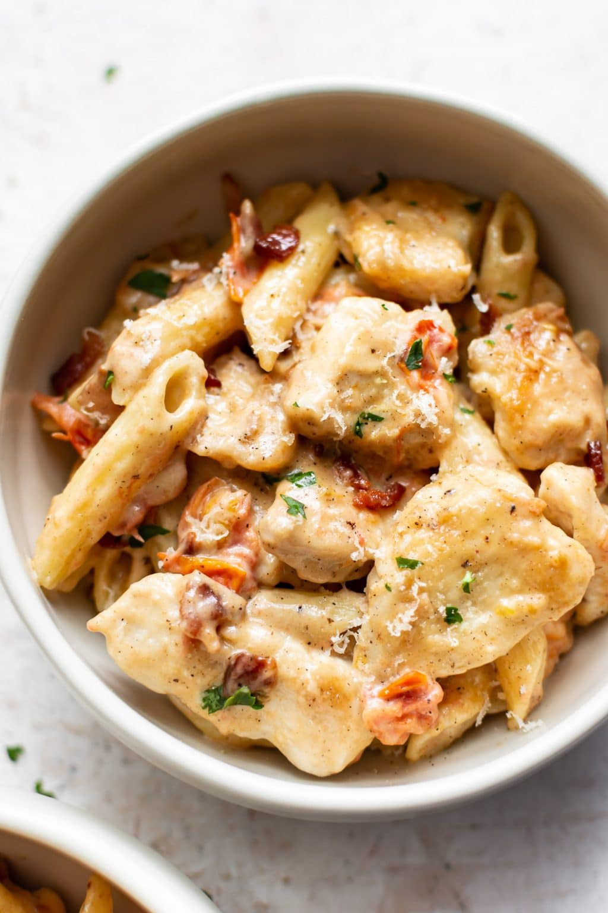

Chicken Penne Pasta

Chicken Penne Pasta
A creamy pasta that adds smokiness with bacon and umami from tomatoes. It's a wonderful dish my family can't get enough of.
Ingredients
- 4 strips bacon cut into small pieces
- 2 large chicken breasts cut into bite-size pieces
- 1/2 teaspoon garlic powder
- Salt & pepper to taste
- Flour for dredging
- 2 cloves garlic minced
- 1/4 cup chicken broth
- 1 cup heavy/whipping cream
- 5 ounces tomatoes chopped small
- 1/2 cup freshly grated parmesan cheese
- 8 ounces uncooked penne pasta
Steps
- Boil a salted pot of water for the pasta. Cook it al dente according to package directions. Meanwhile, cut up the bacon (I use kitchen shears to make this job easy) and fry it in a skillet over medium-high heat until crispy. Once it's done, remove it to a paper towel-lined plate. Leave the bacon grease in the pan.
- Meanwhile, prep your chicken. Cut it up and sprinkle it with the garlic powder and salt & pepper. Coat each piece in flour.
- Cook the chicken over medium-high heat for about 3-4 minutes/side or until golden. You may need to work in two batches so as not to overcrowd the pan. Turn the heat down a little if needed (like if it's splattering a lot). Take the chicken out of the pan and set it aside.
- Stir in the garlic and chicken broth. Scrape up any brown bits from the bottom of the pan. Let it cook for about a minute or so.
- Add the cream and tomatoes to the pan. Cook for 2 minutes or until the tomatoes start to lose their shape.
- Add the chicken and bacon back into the pan and let it warm through for a few minutes (let the sauce thicken a bit). Be careful not to overcook the chicken. Stir in the parmesan and toss with the drained pasta. Season with extra salt & pepper if needed.